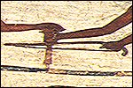
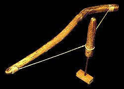

|
Bow Drill

The bow drill was used for drilling holes in wood. It had two parts. The first part was a straight piece of reed or stick of wood with a sharp flint tip on the end. The second part was a bow-shaped reed or piece of wood.

back to explore menu...
|